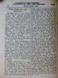
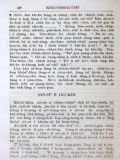
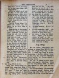
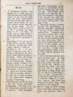
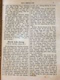

Languages
台文
｜
中文
｜
日本語
｜
English
字體
小
｜
中
｜
大
首頁
/
白話字數位典藏
白話字數位典藏全文檢索
查詢模式
選擇年代
清國時代(1885-1895)
日本時代(1895-1945)
戰後(1945-1969)
1885-1895
1896-1905
1906-1915
1916-1925
1926-1935
1936-1945
1946-1955
1956-1965
1966-1969
1970-1980
1980-1990
1990-2000
2000-2010
2010-
選擇文類
詩
散文
小說
戲劇
傳記
選擇作者
陳清忠
陳清義
編輯部
柯設偕
吳天命
明有德
偕叡廉
周天來
劉華義
王守勇
林茂生
陳添旺
王占魁
柯維思
賴仁聲
陳瓊琚
雪峰逸嵐
吳清鎰
郭水龍
蕭樂善
許水露
葉金木
陳金然
章王由
廖得
鄭連坤
潘道榮
楊士養
梁秀德
劉約翰
周淑慧
高金聲
林燕臣
黃六點
蔡愛義
許有才
主筆
巴克禮
郭朝成
陳鳩水
張基全
陳明清
陳能通
拾穗生
顏振聲
卓恆利
傳道局
胡文池
劉主安
鄭兒玉
蔡Tiōng-kú
Google Search
Yahoo Search
全部
刊名
標題
標題(教羅)
全文
全文(教羅)
作者
第57頁，共93頁(共1,848筆資料) 0.631187915802sec
1
...
55
56
57
58
59
...
93
To Page
GO
文字列表
圖文列表
排序
日期
文類
刊名
作者
影像
[1926-8 芥菜子 文類-散文 作者-陳清義/Tân Chheng-gī]
(4)
基督教佮佛教的研究 [ Ki-tok-kàu kap Hu̍t-kàu ê gián-kiù ]
基督教佮佛教的研究 世間的宗教，毋但一款，派別真濟，照學者所研究，聚集歸類，通講有3大類。 I. 蠻族tek宗教。 II. 一國 tek宗教。 III. 世界tek宗教。 啥物號做蠻族tek宗教？就是親像火教，多神教。 啥物號做一國tek宗教？就是親像希臘教，道教。也啥物號做世界tek宗教？就是基督教、佛教、回回教這款。 今這三个教，雖然平平稱做世界tek宗教，總是無攏總有救世主義的宗旨佇teh。回回教佇台灣無，毋免講，kan-ta將基督教佮佛教來講： 照咱所知基督教是救世主義的宗教，佛教是厭世主義的宗教。今...
[1926-8 芥菜子 文類-散文 作者-陳清忠/Tân Chheng-tiong ]
(2)
耶穌的十字架 [ Iâ-so͘ ê si̍p-jī-kè ]
耶穌的十字架 現時愛耶穌的天國的人，伊的數是濟，總是歡喜pē伊的十字架的人是到極少。 愛求耶穌慰安的人，也是濟，若是求伊的苦痛的人嘛是少。 有濟濟人佮耶穌同桌，總是少少人欲佮伊saⁿ-kap守禁戒，(禁戒) 萬人向望愛欲佮耶穌saⁿ-kap享樂，但是為著耶穌來忍受萬事的人是真少。 愛求耶穌所peh的餅的人是濟，若是歡喜lim伊的苦杯的人是少。 濟濟人尊敬伊的神跡，少少人忍受「恥辱的十字架。 無苦痛的中間，疼耶穌的人是真濟；閣再耶穌賞賜in 慰安的時，人人呵咾，人人感謝。毋kú設使耶穌若離開in tiap-á久，就隨時跋落不...

[1926-8 芥菜子 文類-散文 作者-陳清義/Tân Chheng-gī]
(1)
著全家拜上帝 [ Tio̍h choân-ke pài Siōng-tè ]
著全家拜上帝 咱人踮佇這世間，家內的人數不論濟少，要緊著同心敬拜全能的上帝，做咱的天爸；這个是真要緊的事。可惜現今佇咱教會的中間，有濟濟的，猶未全家拜上帝，致到家內的信仰無相同，常常顯出tōng-tu̍t，大欠缺平安，來失落福氣。若會全家敬拜上帝，信仰相同，行siâng條的路，就真有平安，真有福氣。 這tia̍p愛引幾若个古早的信徒，有全家拜上帝，來做咱的模樣： 1、 Lū-tí-a。這个婦人人有全家拜上帝，伊是Chhui-ngá chhui-lat城的人teh做chi-sek-pò͘ 的生理，平素有拜上帝，信道理；主開啟伊的心，予伊全向保羅所講，全家領...
[1926-8 芥菜子 文類-散文 作者-陳清忠/Tân Chheng-tiong ]
(2)
名人的祈禱 [ Bêng-jîn ê kî-tó ]
名人的祈禱 （I） Samuel Johnson (1709－1784) O主ah，你的手掌管生佮死，對佇你的氣力我通得著徛在，也對佇你的恩典通得著赦免，求你用憐憫àⁿ落來看我。你所命令我著做的義務，到今我有放做袂要緊，空空過日，全然無勞碌來完成你的旨意，求你赦免我這款貧惰的罪。求你予我會記得逐日是你所賞賜--的，應該著照你的命令來用彼日。所以求你予7我深深反悔貧惰的罪，通對你得著恩典，也通經過，你猶饒我的性命佇世間的中間，也來勤勉勞碌佇你的聖旨，倚靠耶穌基督。心所願。 (II) Anselm (1033－1109) O我的主，我的上帝ah，求你賞賜我全心所意向愛欲得...

[1926-1 芥菜子 文類-散文 作者-吳清鎰/Gô͘ Chheng-ek]
(4)
小事的要緊 [ SIÓ-SŪ Ê IÀU-KÍN ]
小事的要緊 看輕小事是親像一塊大石，為著一塊石，人類的大多數有拄著滅無。人的一生是相接紲的小事來成立--的，逐項逐項，比較的是無甚物要緊，猶過逐人的幸福佮成功是照彼的人看小事的款式來決定。 人格是對小事來造成--的－就是gâu尊重小事也gâu實行。人佇事業上的成功是照伊注意佇小事的態度。一家的安樂是對gâu整理小事，gâu準備小事的結果來得著。 有價值，大的智識佮經驗攏是對佇細細的智識，少少的經驗，斟酌來積蓄的結果。佇一生的中間未曉積蓄半項物的人，通看伊做這世間的失敗者－因為in有看輕小事。撿彩in teh想這世間是teh反對in；若是事實，彼的災厄是in家己惹--的。 佇久久的中間...
[1926-1 芥菜子 文類-散文 作者-蔡Tiōng-kú/-]
(3)
白蟻的社會 [ Pe̍h-hiā ê siā-hoē ]
白蟻的社會 人所知佇動物中經營社會生活的昆蟲有3種類。就是蚼蟻，蜂佮白蟻。論in的社會，有相同的所在－有公蟲，母蟲，佮做工的蟲。若是蚼蟻佮白蟻，做工的蟲普通有分兩款－平常做工的頭佮做兵-的。閣較複雜的種類有兩三款的做兵的蟲－有的顧守毋免予對敵來深入，有的去攻擊對敵。 這3款的中間，社會生活最發達-的就是白蟻。伊的岫內照種類有無相同。一般代先一對王佮女王踮做伙，家己漸漸成長；以外猶有in的細細做工的蟲佮做兵的蟲仔囝佇teh。做工的蟲生做siâng款，若是做兵的蟲伊的牙槽是長閣大。牙槽齒較大的是持防，佮拍對敵的職務；較細-的是踮佇岫內行-去監督做工的蟲做工。做兵的蟲有一款頭殼頂有一支真長的器...
[1926-7 芥菜子 文類-散文 作者-陳清忠/Tân Chheng-tiong ]
(4)
著怎樣來受聖神 [ Tio̍h cháiⁿ-iūⁿ lâi siū Sèng Sîn ]
著怎樣來受聖神？ I 上帝約束欲予人。上帝是靈，是人格；上帝是hùn出的思想。所以著顯現佇伊本身以外。彼个就是默示，就是天的啟示。若是按呢伊怎樣來發表？是用雷tân？抑是用野獸？毋是。上帝用人將伊的喙來顯出。伊揀第一聖，第一溫純的人做器具來指示伊的所想，伊的熱情，伊的計畫佮將來所欲生起的事。 先知就是伊的器具，伊的通譯；所講kan-ta上帝nā-tiāⁿ。伊佇以西結(36章有約束欲用清的水hiù--咱）：－ 「用清水hiù恁，予恁成清氣，見若拜偶像，行污穢的代誌，攏總洗除去。」以賽亞35章有用真媠的話講出：－ 「曠野無水的所在欲put-íⁿ，親像山chû-ko，的確有歡喜唱歌...

[1926-7 芥菜子 文類-散文 作者-章王由/Chiong Ông-iû]
(3)
向望 [ ǹg-bāng ]
向望 予咱通gông-ngia̍h佮奇怪的，就是聖保羅有論及這兩字「向望」的要緊。伊囥向望佇道德kong-léng 的內面，就是囥佇信，佮愛，同列。總是保羅先生有伊深深的理想佇teh。 今咱會看見伊所發見這兩字的效用。人若捌常常讀伊的批佮三思伊的道理就欲得著知。 我小可看著這兩字的形影nā-tiāⁿ，袂會tú-tú通及著保羅先生的理想因為是極深沉的道理。 咱通對反來看就會知這兩字的要緊。 嗚呼哀哉！人若失落攏總的向望的時淒慘到怎樣？我拍算就是到佇死的地步，所以通講我佮恁攏活佇向望的內面。咱已經知失落向望的時毋好，按呢向望是好，是道德，是創造tek進化。 若...
[1926-7 芥菜子 文類-散文 作者-蕭樂善/Siau Lo̍k-siān]
(2)
用血成就和平 [ ēng huih sêng-chiū hô-pêng ]
用血成就和平 歌羅西1：20 保羅講和平的工已經成了。佇遮伊毋是愛干證人佮上帝和的事，就是愛報咱知成和平是用啥物法度。這句和平就是親像朋友為著事拍歹感情紲無往來，咱牽in 的手予in相牽，怨恨煞，朋友情閣生起。今上帝無要緊人的陷落罪，伊歡喜將伊十字架的血做和平的法度。咱通想兩項： 1、 怎樣上帝歡喜用伊的囝的血佮死來成就和平。 2、 怎樣用十字架的死。 3、 怎樣上帝歡喜將伊的囝的血佮死來成和平。這款的法度tú-tú是合佇上帝的心肝。伊是慈悲的上帝，也是公義的上帝。伊照公義治理天下。人已經陷落罪，今愛成和平的事，無比用伊的囝的血佮死閣較好較合的法度。所以伊歡喜將完全的...
[1926-7 芥菜子 文類-散文 作者-陳瓊琚/Tân Khêng-ku]
(3)
良妻賢母 [ Liông-chhe Hiân-bió ]
良妻賢母 所講「良妻」是啥物？「賢母」是啥物？啥物等號的某通叫做好的某，抑啥物等號的老母通稱做gâu 的老母？Kiám-chhái有人欲應講，稱做好某--的，是gâu有孝ta-ke-koaⁿ，佮齊全順服伊的丈夫；閣通叫做gâu 的老母--的，是gâu養飼、照顧囝兒佮會曉用嚴hat的法度來教示囝兒。照頂面所開拆的卻有理氣；總是真無完全。若是按呢，kiám-chhái有人欲來反問我的意見也敢！ 凡事聽說明毋達著看證明較要緊。閣再愛知我的意見的兄姐，恁若看這篇到路尾自然會明白，因為我的思想是包含佇遮个故事的內面。 我講請看證明的意思，是愛chhiau揣古早的烈婦來予咱做模範。總是欲寫到chi...
[1926-7 芥菜子 文類-散文 作者-郭水龍/Keh Chuí-lêng]
(3)
愚民迷信 [ Gû-bîn bê-sìn ]
愚民迷信 1、 台北市原怡和巷有一叢古樹有真濟人去拜，謠言講有一个老婦人人暝時受著一个人託夢對伊叫救，隔日彼个婦人人用牲禮銀紙共伊拜，厝邊的人拄著破病也去用牲禮菜飯拜，也好，對按呢謠言愈 hán，一禮拜久就真濟人去hē去求；查埔查某不時oe-oe khoeh，紲有賣金銀紙十外个佇遐teh賣，衙門知，警察隨時去擋止，百姓毋聽閣去拜，後來警察官用pang 共伊釘去來毋准人拜才煞。 2、 桃園近八塊厝共同墓地，有一个墓牌刻 (德來公 的盆墓) 謠言一禮拜前有行路祈禱得著好，近來這个消息一个傳無數的病人相爭去祈禱，桃園中壢楊梅壢，湖口各方面的人去拜，逐日幾若千人紲有臨時的生理金銀紙kiam ...

[1926-6 芥菜子 文類-散文 作者-王守勇/Ông Siú-ióng]
(3)
祈禱 [ Kî-tó ]
祈禱 1、 有一款的植物，若是日落的時，伊的葉佮花就合teh；若日出較燒lō 的時，彼个花佮葉就閣開(親像土豆抑是見笑草的款)按呢植物對日頭吸收燒氣佮活命來大叢。Tú-tú親像按呢，佇祈禱的時，咱的心門大開向佇義的日頭，會通閃避攏總的艱難佮重擔，來長大佇主耶穌完全的體。 2、 照人所teh想，對祈禱咱袂會變換上帝的計畫；總是teh祈禱的人伊本身有變換。雖罔佇這个無完全的生活中，咱的大體的形象，對祈禱逐日漸漸ná向佇完全。且想雞母teh孵卵的事，雞卵內面是無形象，清清的款，總是雞母若孵ná久的時，雞卵就koh樣變做雞仔囝，親像雞母的款式。按呢毋是雞母有變換，就是姬卵變換。所以咱對佇祈禱...

[1926-6 芥菜子 文類-散文 作者-郭水龍/Keh Chuí-lêng]
(2)
婦女服裝 [ Hū-lú ho̍k-chong ]
婦女服裝 (台日新聞抄譯) 婦人人的衫穿佇風俗有大關係。本島婦人人的衫褲，本然較古派、樸實；近來上海，福州的衣服逐日流行奢侈，奇奇怪怪的款。第一快受in 的傳染的，是台灣遮的藝妓娼妓。衫短蓋後面袂密，褲短蓋跤頭u袂密；佇街路行真怪狀，徛家的婦人人雖然無攏學--伊，也是有受著傳染；風俗有大煩惱。就女學生雖無遐奢華也是有染著，卒業了做女教員所穿也是野樣；有的學西洋式，ām領闊，衫身oe̍h，種種奇怪的服裝。 女子文明是在佇學問、道德，毋是在佇衣裳的新奇。願女子愛做教育的主宰著盡力注意。歐美的風俗真奢華，遐个文明國也毋是掠新奇做貴氣，猶原著重風俗改良最要緊。...
[1926-7 芥菜子 文類-散文 作者-郭水龍/Keh Chuí-lêng]
(1)
喜出望外 [ Hí-chhut bōng-goā ]
喜出望外 新店教會的執事羅居，74 歲，目睭tì內障的病漸無看見，4年前予蘭醫生看。醫生講一目袂好lah，一這目會創得，總是無共伊醫舊年就真無看見，行路著giâ柺仔，就入馬偕醫院一禮拜久kan-ta 共伊抹藥；求伊手術8，醫生無共伊手術，伊就轉來，拄著一个媒人婆報伊一个赤跤先共伊醫，用白仔掺馬薯毒一下，目睭紲青盲，攏無看見，著人khan，光、暗，攏毋知，伊的心真大煩惱無看見真艱苦，暝日踮佇眠床袂做事業，總是伊毋死心，不時求上帝著閣予伊看見。無ti無tang 的時，有一个會友共伊講An-ki伯我火車內聽見有人講羅東有一个醫生，創目睭真gâu，你嘛去予伊創看。羅居聽了過暝chh...
[1926-8 芥菜子 文類-散文 作者-陳瓊琚/Tân Khêng-ku]
(2)
消夏談 [ Siau-hā tâm ]
消夏談 東京震災 佇新聞紙上閣看見佇3號東京又閣再拄著不止大的震災，因為震動約有3 分久，算是不止大動。 論地動，若佇台灣kiám-chhái有較稀罕，總是若是內地是平常事。 這陣所欲寫的，卻毋是欲記這擺的，是愛寫佇三、四年前彼个古今未捌有的大震災。大正12年9月1號佇東京拄著大地動，是咱所會記得--的，彼時我猶佇京都teh勉強。咱大家較濟是想京都是ná親像真近東京的款，毋kú其實相離差不多通講是台灣頭到台灣尾的兩倍遠；所以毋是佇近近講隨便欲看就行去看。總是我有朋友對東京報我知，按呢雖然無本身去，iáu-kú也是會知影；閣後來亦有出版彼號...
[1926-7 芥菜子 文類-散文 作者-陳清義/Tân Chheng-gī]
(1)
來看 [ Lâi-khoàⁿ ]
來看。 佇約翰一章 46節。有記載這2字。就是腓力叫那但業來看耶穌，當時主耶穌佇世間，有揀召人來做伊學生，代先有揀召安得烈、彼得、腓力，也腓力受揀召了後，就紲招伊的朋友那但業，總是那但業毋信，僥疑講拿撒勒是僻野的所在，thài會出聖德的人。腓力無愛佮伊辯駁，也無啥物證據予伊。Kan-ta 共伊講，來看，按呢nā-tiāⁿ，講這句不止有意思，予咱通捌幾若項；排列佇下底。 1、 腓力講這句，真好法度。 人佇僥疑袂明的時，用講的，較oh了解，著用看較快明白。譬喻共人講飛行機、活動寫真、蓄音器，人聽了真oh 明，若叫伊來看，隨時會了解。 腓力共那但業講。古早的先知佮摩西所...
[1926-7 芥菜子 文類-散文 作者-郭水龍/Keh Chuí-lêng]
(3)
修養會 [ Siu-ióng-hoē ]
修養會 北部傳教師修養會所經過的消息，時日有較迫袂得通將逐項攏寫；代先簡略後來會閣寫較詳細。 這pang來赴會的人有宣教師10名，牧師9名，傳道士 39名，宣道婦6名。 佇6月29暗各位傳教師攏到淡水中學。隔日就受試驗，主考牧師陳清義，郭希信，蕭安基，替試驗部共 in試驗。成績有分 3等，1等賞￥ 9.00 2等賞 ￥ 7.00 3等賞￥ 5.00。 對7月1日起開修養會，逐日頂晡半點鐘久做祈禱會，3點鐘久聽演講；下晡時一點鐘久練習吟詩。吳牧師娘來教，這pang新詩調出版，有真濟新調，逐人愛學袂siān。 ...
[1926-6 芥菜子 文類-散文 作者-陳清義/Tân Chheng-gī]
(1)
世間的光 [ Sè-kan ê Kng ]
世間的光 佇約翰8章12節有記載主耶穌共眾人講一句話，講：「我就是世間的光。」 對古早到現今，有濟濟大人物予人稱做「人群的光。」親像東洋的孔子，釋迦，老子佮西洋的蘇格拉底等。總是這款的光有限，所照的地方無偌遠，無親像基督的光會照到通世間。所以伊講是世間的光無錯。 今伊的光是啥物款的光？ 1、 伊的光，是啟示的光。啟示啥物？ A、 啟示人捌上帝。基督猶未來以前，人雖然知上帝，總是無徹底；到基督來了，人通十分明白上帝是做人類的天爸。 B、 啟示人捌本身。世間人無明白家己是甚物人...
[1926-5 芥菜子 文類-散文 作者-陳清忠/Tân Chheng-tiong ]
(3)
轉去亞西亞 [ Tńg-khì A-se-a ]
轉去亞西亞！ 轉去，亞西亞！亞西亞是宗教的本所在，是宗教的故鄉！ 佛教佇亞西亞出--的，基督教也是亞西亞生--的。喜馬拉的山跤，加利利的湖邊，實在是世界二大宗教的發源地！ 基督教雖罔是出世佇亞西亞，iáu-kú隨時傳入歐羅巴；這敢通歡喜的事mah？大信，基督-教入歐洲是反轉拄著慘害。設使保羅若無入歐洲若對印度，支那代先來傳毋知怎樣？ 歐洲的文明是科學tek，是機械tek。亞西亞的文化是超越理性tek(超越理性的= phoâⁿ過理性--的)，是靈tek。基督教歐洲人的頭腦是發達(理=理氣)，智(智=智識)，分析(分析=拆開)彼方面。所以連有活命，零的基督教紲共伊分析；致到...
[1926-1 芥菜子 文類-散文 作者-陳清忠/Tân Chheng-tiong ]
(6)
成聖 [ Chiâⁿ-sèng ]
成聖 「人若毋是成聖袂會見著主」 希伯來12章14節。 人已經得著基督ê拯救，著koh進一步來想成聖ê恩典。 (A) 著求成聖ê理由，thang想有5項：－ 1. 成聖是上帝所命令。 「我是聖，恁也著成聖」「恁著盡心、盡性、盡意、盡力疼主你ê上帝；也著疼別人親像家治。」上帝無濫糝命令人，伊ê命令定著有合佇人ê生活，也人穩當行會到ê；koh再是人應該著行--ê。 2. 成聖是上帝佇聖冊中所約束--ê。「主來世間是為著欲除咱ê罪過...
第57頁，共93頁(共1,848筆資料)
1
...
55
56
57
58
59
...
93
To Page
GO
數位典藏國家型科技計劃
拓展台灣數位典藏計畫
版權所有 國立台灣師範大學 台灣文化及語言文學研究所©2008
10610 台北市和平東路一段162號│TEL 02-7734-5516│Fax 02-2358-2461
計劃簡介
典藏特色
執行架構
計畫典藏數位化流程
成員介紹
台灣白話字發展簡介
巴克禮牧師與《台灣教會公報》
廈門話字典-杜嘉德
白話字教學-打馬字
中國南方白話字發展
台灣基督教長老教會簡表
台灣基督教長老教會教會歷史委員會
《北部台灣基督長老教會教會ê歷史》
關於陳清忠
白話字文學：台灣文學的早春